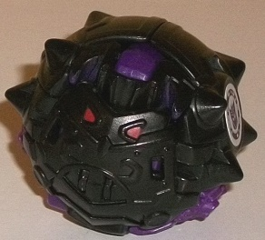
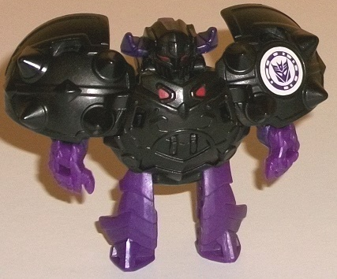
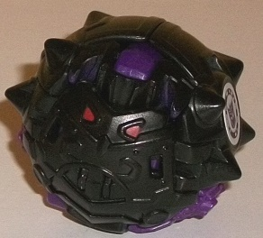
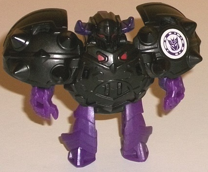
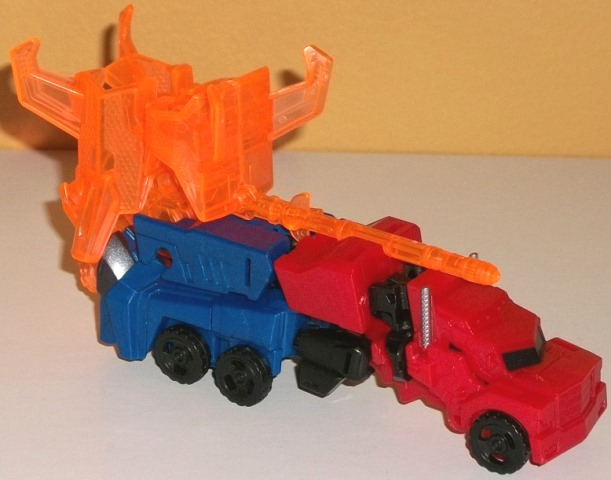
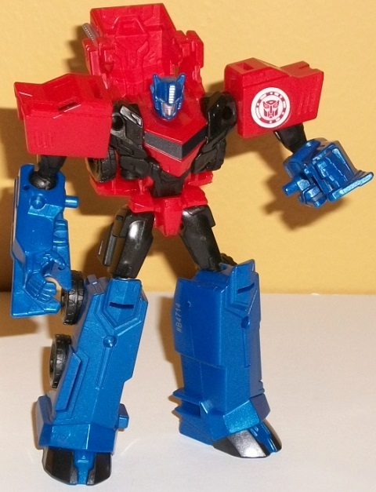
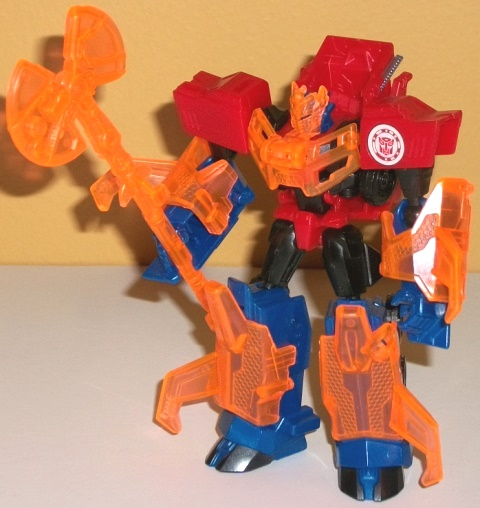

 
Allegiance : Decepticon
Size : Mini-Con
Difficulty of Transformation : Very Easy
Color Scheme : Black, dark purple, and some dull red
Individual Rating : 5.6
 Decepticon
Bludgeon
Decepticon
Bludgeon


Allegiance
: Decepticon
Size
: Mini-Con
Difficulty of Transformation
: Very
Easy
Color Scheme
: Black, dark purple,
and some dull red
Individual Rating
: 5.6
Bludgeon's ball mode
is more of a "medieval-looking" mace/ball... if that makes any sense. (Hey,
they have to distinguish all these ball Mini-Cons somehow!) On the front
end, there's what looks a bit like a face, with red-painted "eyes" and
curved details around that center portion that actually make it look like
an angry face with a curly mustache... interesting. There's also some fairly
wide spikes on the side, including a rather ingenious use of the feet as
two additional spikes. Compared to the front, the sides of the ball mode
are relatively light on detailing on the top, while the bottom are fairly
obvious robot bits. The hands are pretty darned obvious from the detailing
in the middle of the sides, which is the biggest issue. The legs are also
somewhat obvious on the bottom of the sides, but that's only because of
the color-- otherwise they fit in pretty well detailing-wise. Still, even
with the hands, none of them mess with the overall silhouette, and look
pretty decent. Color-wise, Bludgeon is almost entirely black, with the
aforementioned red eyes, and then the hands and legs on the bottom (along
with a little part on the top that's used for transformation) being a fairly
dark shade of purple. Obviously it's a pretty Decepticon-y color scheme,
but as with most Minicons, he needs more paint to really bring out all
those details, especially on the front of this mode. At least in this mode
as well, the purple works to its disadvantage, since despite the addition
of another color, it really makes obvious the robot mode bits near the
bottom and sides-- if they were black, they really wouldn't stick out.
To get Bludgeon to robot
mode, you just take the "seam" in the middle of the back of the ball mode
and rotate the sides out, which automatically transforms the rest of the
toy (though you have to rotate the lower arms down). In robot mode-- in
keeping with the "medieval" look of his alt mode-- Bludgeon looks like
a short armored knight, chubby to the point where it eliminates pretty
much any "eeeevil Decepticon" threat you may otherwise get from him. He's
definitely got a very round body and ridiculously large shoulder pads made
out of the sides, which look all the bigger given the teeeny tiny lower
arms. I mean, it's basically just his hands there, folks, there's practically
no lower arms to speak of. His legs are pretty decent, with some nice "segmented"
detailing that looks a bit similar to knight armor. The head looks straight-up
like an evil knight, with small purple horns on the side, a detailed faceguard
with vents on the front, and two dark red eyes from deep within the helmet.
The headsculpt is extremely well done and the best part of this mode, in
my opinion. Unfortunately, beyond the head and the two "eyes" on the chest,
that's it as far as paint goes. For articulation, Bludgeon's hands can
move inwards, but that's it-- though this is pretty much the norm for RID2015
Mini-Cons, sadly (if they can move at all in robot mode).
 Optimus
Prime
Optimus
Prime



Allegiance
: Autobot
Difficulty of Transformation
: Very
Easy
Color Scheme
: Moderately dark milky
semi-metallic blue, black, moderately dark red, transparent light pale
orange, and some silver and moderately light blue
Individual Rating
: 6.9
Optimus Prime's vehicle
mode is a stylized truck w/ a trailer; you're probably pretty familiar
with it by now. The overall look of this mode is definitely secondary to
the robot mode look, though, as this toy takes the general construction
of the
Legion class toy
and... well...
messes with it. The arms become the top of the trailer and the legs the
bottom of the trailer, but they don't fit in seemlessly with the rest of
the vehicle mode. There's a REALLY obvious and obnoxious gap on the bottom
of the toy between the back end of the cab and where the lower legs form
the back half of the trailer-- there should've been little fold-up panels
to hide those obvious upper legs and close the gap. The arms also don't
reach back as far as the legs, so the trailer ends at the top earlier than
it ends on the bottom, making the legs VERY obvious and also just looking
weird. The hand detailing on the end of the trailer section is also pretty
obvious, as well. Dark blue, black, and red are the main colors, though
the red is just a titch darker than on most other RID2015 Optimus toys.
The mold detailing is the usual for a RID2015 toy; it's pretty sparse in
places like the top of this mode, but there's surprisingly intricate, angular,
stylized detailing on the cab section with angular side doors and a grill,
little smokestacks on the sides, the usual trio of diagonal divots on each
side of the trailer section, and pretty intricate detailing on the wheels,
with even little tiny "bolts" mixed in! On the back end there's little
details of the rear bumper and taillights-- they're not painted, unfortunately,
though at least the fact that Hasbro remembered to detail the back end
this time is a slight improvement. Paint-wise Optimus is pretty sparse;
he's got black paint on the front window and on the foot "hooves" on the
back end, and silver on the smokestacks, but that's it. It's rather unfortunate
as particularly all that unpainted plastic on the trailer portion really
could've used some paint to help the red and blue mix together better back
there, and maybe add some highlights.
His shoulders sort of
fold up on an extra hinge, but otherwise the transformation is again pretty
similar to the Legion class toy's, with the only real extra being the truck
cab section on the back. It sticks up a bit more here than on the Legion
class toy, though, and it does stick out from the sides of the chest section
a bit. However, it stays out of the way of articulation and is a minor
extra overall. The hands are also mostly molded into the sections that
become the top of the trailer-- there's angles coming off of them that
form the edges of that trailer section-- but again, overall this is a pretty
small issue. Otherwise, Optimus is very proportional in this mode, with
nice proportional shoulders, arms, and legs. (Yes, his upper legs are pretty
small in comparison to his lower legs, but this is fairly accurate to the
show model.) The new paint apps are black on his faux cab-chest and silver
on his face and forehead vent, as well as some light blue on the eyes;
otherwise there's no new paint apps, so again, he really could use some
more highlights. That said, his headsculpt is pretty spot-on, with a pretty
stern look on his face, and the details on his chest are also pretty accurate
to the show, with a faux angular truck "window" on the center and abs below
said area. The black pieces on the sides and bottom of the main body kinda
break up that area in a bad way, though-- not only is it not accurate to
the show model, but it looks kinda odd and obscures all that excellent
mold detailing. He's also got a few minor angular details on his legs,
but otherwise they're pretty sparse, and they aren't painted either, unfortunately.
Optimus is pretty articulated in this mode-- he can move at the neck, shoulders
(at two points), elbows, hips, and knees, with most of those on balljoints--
given that's he's quite well-balanced, this means he can get into a lot
of cool poses.
Unlike most of the other
packs with Mini-Cons, the Mini-Con battle packs come with extra armor parts
for the main Transformer, not the Mini-Con! For Optimus Prime, he comes
with light pale orange transparent parts that give some much-needed brightness
to his color scheme. I wish they were a bit less pale in their color, but
they're still a pretty nice shade. As armor parts, he comes with an axe
(as Optimus usually has); two armor parts on his lower legs that have little
angled blade bits coming out; similar parts on his shoulders; and a chest
piece that has a flip-up part that goes over his face to form a cool knight-like
mask. In addition, all of the different parts can combine to form a mega
weapon; you peg in the arm and shoulder bits onto the front of the axe
with the blade parts pointing forward to form a MEGA warhammer, and the
chest/mask piece sorta hangs off the back end of the weapon without really
doing anything. It's a REALLY cool weapon, I love it to bits. We need more
TFs with warhammers. Another really cool addition is that there's a small
tab in the handle of the warhammer that corresponds to a little hole on
the top of Optimus' trailer in vehicle mode, so he CAN actually carry the
warhammer in vehicle mode as well!
He has some positives,
but overall the Mini-Con Battle Pack with Optimus Prime and Bludgeon is
one of the weakest in the size class. Optimus has a pretty nice robot mode,
but a very poor vehicle mode and desperately needs more paint apps. His
armor bits are really cool, however, and they form a killer weapon. Bludgeon
has a unique medieval look to him with his detailing, but his robot mode
is so chunky it looks kinda doofy outside of the cool-looking helmet-head.
Reviews by Beastbot